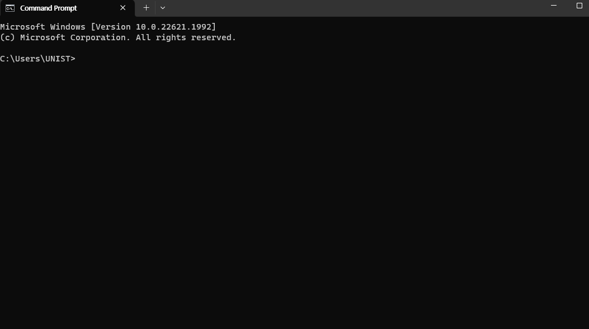
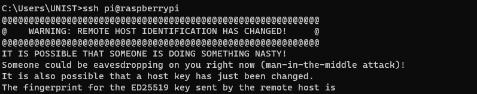
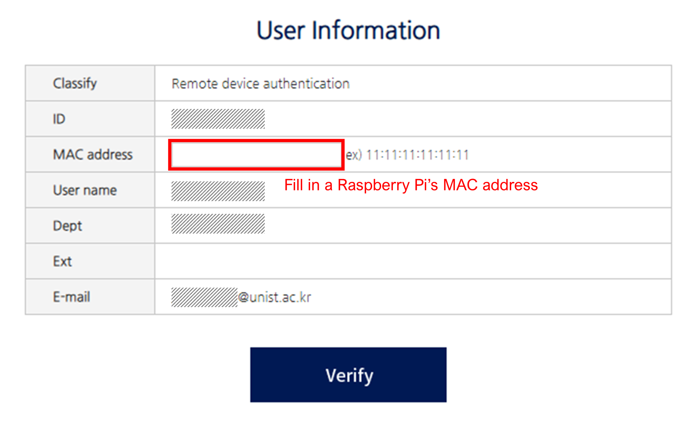
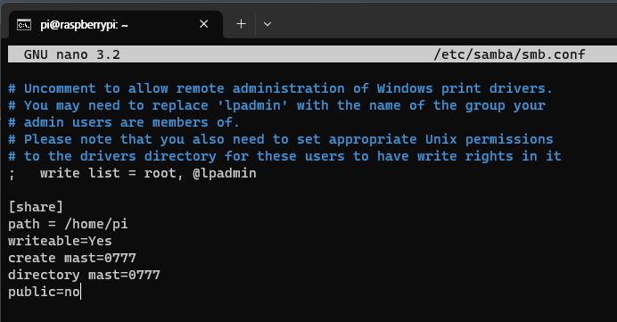
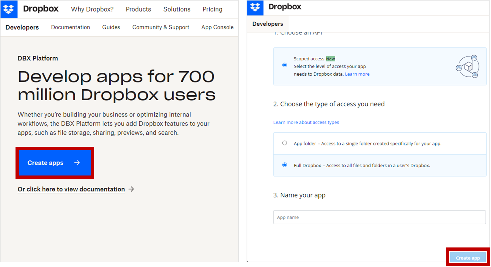

2.3. Installation Steps
2.3.1. Initiating Your Raspberry Pi
Step 1: Download the Pi Imager
Begin by downloading the Raspberry Pi Imager, a tool for installing the operating system on your Pi. This software is available on the official Raspberry Pi website. Select the version compatible with your operating system (Windows, macOS, or Ubuntu) and install it on your computer.
Step 2: Format your SD Card
Insert an SD card into your computer, then launch the Raspberry Pi Imager you just installed. Click CHOOSE OS, then select the Erase option followed by Format SD Card.
Step 3: Flash the OS onto your SD Card
Once your SD card is formatted, navigate back to the Raspberry Pi Imager main menu. Click CHOOSE OS, then select the Raspberry Pi OS version you wish to install. Afterward, select CHOOSE SD CARD and pick your SD card from the list.
Before you click WRITE to start the writing process, remember to enable ssh for remote access. You can do this by creating an empty file named ssh in the boot partition of the SD card. Also, set the username and password as ‘pi’ and ‘raspberry’ respectively in the settings.
The Raspberry Pi OS’s default username and password are ‘pi’ and ‘raspberry’. However, it’s advisable to change these for security reasons once your system is up and running.
Step 4: Connect your Pi to your Laptop
With the Pi-equipped SD card, connect your Pi to your laptop using an Ethernet cable.

Step 5: Enable Internet Connection Sharing
Navigate to your laptop’s network settings and enable the Internet Connection Sharing option. This will allow your laptop to share its internet connection with the Raspberry Pi via the Ethernet cable, provided it’s connected to the internet.
Step 6: Access Your Raspberry Pi via SSH
Having installed the Windows Terminal from the Microsoft Store, you can access the Command Prompt by pressing Ctrl + R, typing cmd, and hitting Enter. Alternatively, you can open it by pressing Ctrl + Shift + P. This is what you should see:

To establish an SSH connection with your Raspberry Pi, enter the following command:
ssh pi@raspberrypiLocating Your Raspberry Pi’s IP Address using MAC Address
You can determine your Raspberry Pi’s IP address using its MAC address. Here’s how to do it:
1. Open Command Prompt: Press the Windows key on your keyboard, type cmd and hit Enter.
2. Execute the arp -a command: This command displays the IP and MAC addresses of devices on your network.
3. Identify your Raspberry Pi: Raspberry Pi devices have MAC addresses that start with B8:27:EB:xx:xx:xx or DC:A6:32:xx:xx:xx. Find the device in the list with a physical address that starts with these characters - that’s your Raspberry Pi’s IP address.
Note: These are the MAC address prefixes specific to Raspberry Pi Foundation devices. Your device’s MAC address may start with a different prefix.
This warning message means that the remote system you are trying to connect to has a different identification from what your system was expecting. This often happens when the system has been re-installed or the SSH key on the server has changed.

You can fix the error by editing your ~/.ssh/known_hosts file and removing the old key for the Raspberry Pi. Here’s how to remove the old key:
ssh-keygen -R raspberrypiOnce done, try to re-establish the SSH connection.
Step 7: Verify Your Pi’s Internet Connectivity
To confirm your Raspberry Pi’s internet connection, use the ping command followed by the IP address of a well-known site. For example, ping Google’s Public DNS Server by typing this command:
ping 8.8.8.8If the Pi is connected to the internet, you will see lines starting with ‘64 bytes from 8.8.8.8’ and a summary of the ping at the end.
If you’re using a network with enhanced security, such as a university network, you may need to register your Raspberry Pi’s MAC address. The following figure is an example of what I did using my university network. If needed, consult your network administrator or IT support for the specific procedures of your network.

2.3.2. Configuring Your Pi as a Wireless Sensor
This step allows your Pi to synchronize its system time with the internet during boot. Since Raspberry Pi doesn’t have a real-time clock to keep track of time when it’s not powered on (more details here), it must fetch the current time from the internet upon booting.
Step 1. Update Your Raspberry Pi OS
Start by updating your Raspberry Pi’s operating system (OS) to its latest version. Open a terminal window and enter the following commands:
sudo apt-get update -y && sudo apt-get upgrade -yFor copy, you could click this icon to copy the command:

For paste, there are various ways; please visit this when Ctrl+V doesn’t work in the terminal.
In Linux systems, sudo stands for “superuser do”, similar to “Run As Administrator” in Windows. The -y flag automatically confirms any prompts during the update process. The apt-get update command refreshes the list of available packages and their versions, while apt-get upgrade installs the latest versions. You can learn basic Linux commands on websites like this.
The given command should be placed like this:

After the updates are complete, restart your Raspberry Pi using this command:
sudo rebootStep 2. Set Up Your Mobile’s Hotspot
We’ll establish your mobile phone’s hotspot as the network provider, which the Raspberry Pi will utilize for time synchronization. Set up your hotspot like this:

Step 3. Edit the Pi’s Network Configuration
Access the network configuration information by entering this command:
sudo nano /etc/wpa_supplicant/wpa_supplicant.confStep 4. Add Your Hotspot Information
Add the following details (in this case, juhyeon9087 is used for both SSID and password of my mobile phone hotspot).
country=GB
network={
ssid="juhyeon9087"
psk="juhyeon9087"
key_mgmt=WPA-PSK
}
After updating the WiFi connection details, press Ctrl + X, then Y, followed by Enter to save the changes. Reboot your Raspberry Pi to implement the changes.
2.3.3. Transforming Your Pi into a File Server
This process allows easy sharing of files between a Raspberry Pi and other devices, such as laptops and PCs. Samba, an open-source secure network file-sharing system, enables this transfer. By setting up Samba, files can be conveniently transferred to and from a laptop within your network to a Raspberry Pi, via a direct Ethernet connection.
Step 1. Install Samba
Enter the following command in your terminal to install Samba:
sudo apt-get install samba samba-common-bin -yStep 2. Modify the Samba Config File
To share the Pi’s folder, modify the Samba config file using the following command:
sudo nano /etc/samba/smb.confMove to the end line by pressing Alt + / and add this:
[share]
path = /home/pi
writeable=Yes
create mast=0777
directory mast=0777
public=no
Press Ctrl + X, then Y, followed by Enter to save the changes.
Step 3. Set Up a Samba User
Set up a user for your Samba share on your Pi using this command:
sudo smbpasswd -a piThen, enter the password twice as prompted by the command. In this case, the password is raspberry.
Step 4. Restart Samba Services
Restart the Samba services to apply the changes by typing this:
sudo service smbd restartsudo service nmbd restartStep 5. Access the Pi Directory
Open the File Explorer (press Win + E), type in the address raspberrypi/pi, then enter the Pi’s name and password as network credentials.
Step 6. Create and Verify the Test File
Create a text file in your Pi’s directory using the following command.
sudo nano test.txtAfter typing anything (e.g., ‘gg’) in the file, press Ctrl + x, then y, followed by Enter. You should then be able to see the file on your laptop.
2.3.4. Setting Up Cloud Storage Access on Your Pi
This step involves configuring your Raspberry Pi to send status data to your cloud storage. It’s essential to ensure that your Pi is properly set up before or during its installation. Typically, you might consider connecting a monitor, mouse, and keyboard to your Pi to check its status, but that’s not always practical or convenient.
Instead, we recommend setting up your Pi to relay status updates - such as available storage space - to your chosen cloud storage. Once your Pi starts sending these updates, you can easily monitor its status by accessing and reviewing these files in the cloud storage. This method allows you to remotely track the setup progress and address any potential issues promptly.
Step 1. Create a Dropbox App
In this guide, we will be utilizing Dropbox as our cloud storage service. You need to first set up an app on Dropbox to interface with the service. Follow the steps below:
- Navigate to the Dropbox developer page.
- Sign in or create an account if you haven’t done so already.
- Once you’re logged in, proceed to create a new application.

Step 2. Modify the Permission
Configure your application to permit the viewing and management of files and folders. In this instance, we’ve selected all the available options in the permission settings (for the indivisual scope).

Step 3. Install the Necessary Packages
Make sure that curl and git packages are installed on your Pi. You can do this by entering the following command:
sudo apt install curl git -yStep 4. Install the Dropbox Uploader
Download the Dropbox Uploader script onto your Pi using this command:
git clone https://github.com/andreafabrizi/Dropbox-Uploader.gitStep 5. Assign Execution Permission
Move into the cloned directory and bestow the executable permission to the script by using these commands:
cd Dropbox-Uploadersudo chmod +x dropbox_uploader.shStep 6. Validate App Permissions on Your Pi
Begin the Dropbox Uploader configuration with the following command:
./dropbox_uploader.shEnter your app key and app secret in the terminal:

Copy and paste the given URL into a web browser, then click ‘Continue’ and ‘Allow’ to authorize the permissions.

Copy and paste the generated access code to the terminal.

Step 7. Verify Cloud Storage Access
Employ the upload function to transmit a ‘README.md’ file by executing this command:
./dropbox_uploader.sh upload README.md /You should be able to view the file that was sent by executing the command.
Go back to the home directory by executing the command:
cd /home/pi2.3.5. Software Setup
Step 1. Retrieve Required Scripts
To set up the sensing service on your Raspberry Pi, you’ll need to access the scripts located in the urban-sensing-raspi GitHub repository.
Before you proceed, ensure that your current directory is /home/pi. If you’re in a different directory, use the following command to navigate to the correct location:
cd /home/piNext, download the repository by executing the following command:
git clone https://github.com/jhyeonpark/urban-sensing-raspi.gitThis repository contains several files, which are briefly explained below:
.
├── install.sh
├── configure.sh
├── code
│ ├── default
│ │ └── start.py
│ └── ... (additional directories/files as needed)
└── README.mdinstall.sh: This script automates the installation of the Urban Sensing Service. It handles tasks such as installing necessary system packages and Python libraries, setting up the Bluetooth logger, and conducting other initial setup tasks.configure.sh: This script manages the configuration of the Urban Sensing Service. It sets up udev rules for consistent network interface naming and creates a systemd service to run the sensing service automatically at boot.start.py: Located in the ‘code/default’ directory, this Python script is the main program for the Urban Sensing Service. By default, it configures WiFi monitoring on three different channels, collects WiFi packet data, parses this data, and stores relevant information in a SQLite database. It also collects Bluetooth data.
Step 2. Install necessary packages
Once you download the repository, move your working directory to the repository with the following command:
cd urban-sensing-raspiNext, run the install.sh script by executing this command:
bash install.shStep 3. Configure setting
run the configure.sh script by executing this command:
bash install.shOnce the installation script completes, proceed with the configure.sh script. This script sets up udev rules for consistent network interface naming and creates a systemd service to run the sensing service automatically at boot.
Remember to start the service again when you’re ready to resume sensing operations.
2.3.6. Testing the Sensing Service
Step 1: Prepare the Environment
Prior to initiating the testing process, ensure to restart your Raspberry Pi:
sudo rebootAfter restarting your Pi, stop the Urban Sensing Service that automatically starts up due to configure.sh:
systemctl stop sensing.serviceThe start.py script contains a time.sleep function, which introduces a 30-second delay after the system’s initialization to ensure stability. If the sensing service is manually interrupted within this window using systemctl stop sensing.service, the sensing operations and other processes encapsulated in start.py won’t be initiated.
Step 2: Execute the Code
Plug WiFi adapters on your Pi.

Run the Urban Sensing code using the following command:
python3 urban-sensing-raspi/code/default/start.py2 minutes later, use the Ctrl+C to stop the code.
Step 3: Verify the Results
To stop the code, use the ctrl+C command.
Afterward, verify the following: 1. Inspect the ‘stats’ folder: - Has a file been generated? - Are the files named correctly, incorporating the date and time when you executed the script? - Were the files from the ‘stats’ folder successfully transferred to your Dropbox Storage?
- Look through the ‘data’ folder:
- Was the Blueglog file generated?
- Was the WiFi packet file created? Open the sqlite file by DB Browser for SQLite